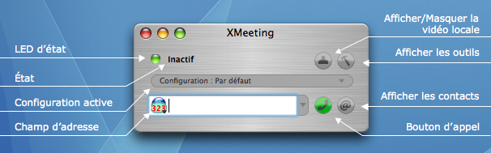
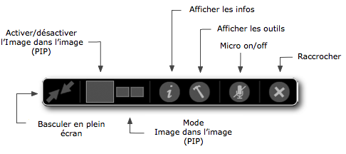
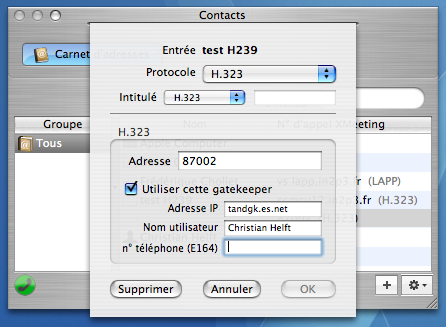
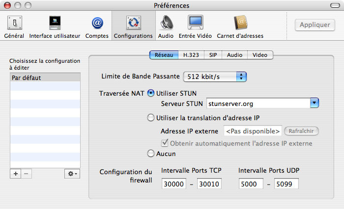

Manuel XMeeting
Auteurs : Hannes FriederichParties de texte basées sur le travail de Ivan Guajana
Version française : Christian Helft
Dernière mise à jour : 28 juin 2006
XMeeting version 0.3
Manuel XMeetingAuteurs : Hannes FriederichParties de texte basées sur le travail de Ivan Guajana Version française : Christian Helft Dernière mise à jour : 28 juin 2006 XMeeting version 0.3 |
|
Bienvenue et merci d'avoir choisi XMeeting !
XMeeting est un outil de vidéoconférence puissant capable
d'utiliser différents protocoles de communication. À
l'heure actuelle, les protocoles H323 et SIP sont supportés.
De nos jours, beaucoup de gens utilisent des ordinateurs portables
qu'ils emportent partout. Cependant, la vitesse du réseau peut
être différente à la maison ou au bureau. En plus,
les réglages du firewall/NAT peuvent être
différents dans les deux cas. Malheureusement, les
réglages du réseau peuvent avoir une très grande
influence sur les fonctionnalités d'un outil de
vidéoconférence basé sur H323 ou SIP.
Il serait quelque peu laborieux d'avoir chaque fois à aller dans
les préférences changer un ou deux paramètres pour
qu'Xmeeting fonctionne correctement.
Configurations
La solution à ce problème est similaire à celle
fournie par Apple pour les réglages réseau. On peut
définir différentes configurations réseau et
activer la configuration la plus appropriée quand le besoin s'en fait sentir,
très facilement.
Dans XMeeting, une configuration englobe tout un jeu de
préférences susceptibles de changer d'un endroit à
un autre. Une configuration contient des informations sur :
Comptes
Dans le monde H323, il est possible de s'enregistrer sur une gatekeeper de façon à pouvoir se faire appeler via un numéro de téléphone ou un nom plutôt qu'une adresse réseau. Dans le monde SIP, le même service existe grâce à ce qu'on appelle des registrars. De plus, dans le monde SIP, il est quasiment obligatoire d'utiliser un registrar.
Pour s'enregistrer sur une gatekeeper ou un registrar, il faut
fournir des informations de compte telles que nom d'utilisateur,
numéro de téléphone et parfois mot de passe
également.
À partir de la version 0.2, XMeeting ne mémorise plus ces
informations directement dans les configurations, mais plutôt
dans des comptes H323 ou SIP explicites. Les configurations "pointent"
sur ces comptes. Il est ainsi possible d'avoir plusieurs configurations
qui utilisent le même compte. S'il faut changer les
paramètres d'un compte, on le fait une seule fois pour toutes
les configurations correspondantes.
Si vous ne voulez utiliser qu'un seul jeu de préférences, inutile de se préoccuper de ce genre de détails. L'Assistant Réglages (voir 3. Première exécution) s'occupera de tous les paramètres pour vous.
Quand XMeeting démarre pour la première fois,
l'Assistant Réglages est d'abord lancé plutôt que
d'afficher simplement la fenêtre principale. Cet assistant va
vous aider à configurer XMeeting. Il va créer et
paramétrer une Configuration et -si besoin est- un compte H323
ou SIP.
Pour plus de détails à propos des Configurations et Comptes, veuillez vous référer à 2. Configuration & Comptes.
Si vous quittez l'Assistant Configuration, une configuration par défaut ne fournissant aucune fonctionnalité sera activée. Vous devez alors ouvrir les préférences et configurer XMeeting.
Fenêtre principale
La fenêtre principale d'Xmeeting se présente ainsi :

LED d'état
Trois couleurs indiquent l'état d'XMeeting :
Vert : Tout va bien.
Orange : Quelques problèmes, mais il est encore possible de lancer des appels.
Rouge : Sérieux problèmes. XMeeting ne peut plus émettre ou recevoir des appels.
On peut cliquer sur la LED pour ouvrir la fenêtre d'état
dans laquelle on trouvera des informations plus
détaillées sur ce qui marche ou pas.
État
Affiche une information d'état basique telle que "Inactif", "Déconnecté', "Appel entrant".
Configuration active
Affiche la configuration active et permet à l'utilisateur d'en choisir une autre.
Afficher/Masquer la vidéo locale
Affiche/Masque une prévisualisation du
périphérique vidéo actuellement en service
(caméra, écran).
Afficher les outils
Affiche la fenêtre des outils
Afficher les contacts
Affiche la fenêtre des contacts
Bouton d'appel
Lance l'appel du site distant
Champ d'adresse
Pour appeler un site distant, entrez son adresse ici. Pendant la
saisie, XMeeting affichera toutes les adresses que vous avez
précédemment entrées. L'icône sur la gauche
indique le type d'adresse que vous avez entrée. Si, par exemple,
l'adresse que vous êtes en train de saisir est parmi celles
récemment appelées, l'icône affichée sera
différente de celle par défaut. De plus, l'icône
indique quel protocole (H323 ou SIP) sera utilisé quand vous
appellerez.
En pressant le bouton à droite du champ, vous ouvrez un menu
avec toutes les adresses contenues dans la base d'XMeeting. Cette base
est constituée des dix dernières adresses appelées
et de la totalité des adresses XMeeting contenues dans le Carnet
d'Adresses.
Choisir le protocole d'appel (H323 ou SIP)
Du fait qu'XMeeting supporte à la fois H323 et SIP, vous
devez toujours indiquer quel protocole utiliser quand vous
émettez un appel. Si un seul protocole est activé, il
sera choisi par défaut. Vous pouvez toujours saisir n'importe
quel protocole, même si celui-ci n'est pas activé.
Cependant, vous obtiendrez un message d'erreur si vous essayez
d'émettre un appel dans ces conditions.
On peut choisir un protocole de diverses manières :
Contrôles pendant l'appel
Une fois la communication établie, le contenu de la
fenêtre principale décrit ci-dessus est remplacé
par l'image du site distant. Pour effectuer des réglages ou
raccrocher au cours d'une communication, vous utiliserez les
contrôles pendant l'appel. Si vous survolez la zone
inférieure de la fenêtre f'affichage du site distant, les
contrôles suivants apparaitront :

Basculer en plein écran
Commute l'affichage plein écran/fenêtre.
Activer/désactiver l'Image dans l'image (PIP)
Si le mode Image dans l'image (Picture in Picture, PIP) est
activé, à la fois le site distant et la vidéo
locale sont affichés. L'agencement des deux images est
déterminé par le mode Image dans l'image (PIP).
Image dans l'image (PIP)
Commute entre les divers modes Image dans l'image (PIP). Les modes suivants sont disponibles :
Afficher les infos
Affiche la fenêtre d'infos
Afficher les outils
Affiche la fenêtre des outils
Micro on/off
Désactive/active le microphone local
Raccrocher
Termine l'appel en cours.
Inspecteur de Contacts
L'Inspecteur de contacts administre toutes sortes de contacts, que ce
soit des contacts SIP (pas encore supporté) ou des contacts
stockés dans la base de données du Carnet d'adresses.
Carnet d'adresse
L'outil Carnet d'adresses vous permet de gérer vos contacts
stockés dans l'annuaire du Carnet d'adresse. Vous pouvez ajouter
des nouvelles entrées, ajouter des adresses H323 ou SIP
à des entrées existantes et modifier les adresses
stockées.
Quand vous éditez une adresse, vous devez toujours
préciser quel protocole cette adresse utilise. L'intitulé
du champ correspondant vous aide à identifier de quel champ il
s'agit. Pour plus de détails sur les intitulés de champ,
référez-vous à l'aide de l'application Carnet
d'adresses.
Dans le cas d'une adresse H323, vous pouvez également ajouter de l'information supplémentaire à l'adresse d'appel elle-même. Vous pouvez forcer XMeeting à utiliser une gatekeeper spécifique chaque fois que vous appelez cette adress. La plupart du temps, cette fonctionnalité n'est pas nécessaire, mais elle peut se révéler utile pour des tests. On pourrait obtenir le même résultat en créant deux comptes H323 pour deux gatekeepers différentes et deux configurations qui pointent vers ces comptes, mais l'approche proposée ici est plus adéquate.

Inspecteur d'Info
L'inspecteur d'info affiche des informations utiles sur l'état
du réseau et sur les appels récents ou en cours.
État
Des informations détaillées sur l'état du
réseau en général ainsi que sur celui des
protocoles H323 et SIP sont affichées ici.
Statistiques
Pendant un appel, des statistiques utiles telles que le codec en
service, la bande passante utilisée et le "round trip delay"
sont disponible ici.
Historique
Tous les appels émis ou reçus depuis le lancement de
l'application sont listés ici. Ils peuvent être
examinés plus à fond, avec des détails tels
que la durée de l'appel, les codecs utilisés etc.
Le "Log" fournit une trace de toutes sortes d'activités et
événements survenus lors de l'exécution
d'XMeeting.
Inspecteur d'Outils
L'inspecteur d'outils fournit des outils pour contrôler l'audio
et la vidéo, à la fois localement et sur le site distant.
Contrôle Audio/Video
Cet outil permet de sélectionner les périphériques
audio/vidéo, d'ajuster les réglages de volume et
vidéo.
Contrôle à distance
Cet outil fournit un pavé numérique pour numéroter
pendant un appel. Les flèches permettent de contrôler la
caméra distante (si cette fonctionnalité est disponible),
ou par exemple naviguer à travers une liste de
conférences si on est connecté à un MCU Codian.
Cette section commente brièvement les paramètres disponibles dans la fenêtre des préférences.
Général
Contient les paramètres au niveau de l'application tels le Nom Affiché et les options de debug.
Produire une trace de debug
Lors de la remontée de problèmes tels que pas de
vidéo/audio, mauvaise vidéo, crashes etc., une trace de
debug peut fournir des informations précieuses. En
général, vous n'avez pas besoin d'activer cette fonction.
Interface utilisateur
Cette section gère l'interface utilisateur d'XMeeting. Vous
pouvez spécifier comment XMeeting doit se comporter lors d'appel
entrant etc.
Vue personnelle inversée
Certaines personnes souhaitent se voir dans la fenêtre de la
vidéo locale comme elles se voient dans un miroir.
L'aperçu local affiche l'image comme la voient les
interlocuteurs. Vous pouvez demander à XMeeting d'afficher
l'image comme vue dans un miroir.
Comptes
Cette section vous permet de gérer les comptes H323 et SIP.
Configurations
Le panneau Configurations vous permet d'éditer les configurations d'XMeeting.

À gauche, vous pouvez sélectionner la configuration
à éditer. Les réglages correspondants s'affichent
alors dans la partie de droite.
Vous pouvez aussi créer de nouvelles configurations, dupliquer
ou supprimer des configurations existantes et en importer à
partir d'un fichier. (Voir 6. Importer des configurations)
Réseau
ici, vous pouvez spécifier une limite sur la bande passante
utilisée et d'autres réglages réseaux. Si vous
êtes derrière un NAT (typiquement chez vous si vous avez
installé un routeur WiFi), vous devez probablement activer STUN,
sous peine de ne pas pouvoir recevoir les flux vidéo/audio du
site distant. Une autre possibilité pour traverser le NAT est
d'utiliser la translation d'adresse IP. Dans ce cas, vous devrez sans
doute valider l'option "Port Forwarding" dans votre appareil qui assure
la fonction NAT (en général votre routeur WiFi) pour
faire fonctionner correctement vos appels.
H323
Permet d'activer/désactiver H323 pour cette configuration. Vous
pouvez aussi choisir ici quel compte H323 utiliser pour cette
configuration (si H323 est activé).
SIP
Permet de choisir quel compte SIP et quels réglages proxy utiliser.
Audio
Permet de valider/dévalider les codecs audio et de
spécifier un ordre de préférence pour ceux-ci.
Utiliser un buffer audio plus grand peut aboutir à une meilleure
qualité audio, au prix d'un plus grand décalage dans le
temps. (Cette fonctionnalité n'est pas encore
implémentée)
Video
Bien qu'Xmeeting ait été concu comme une application de
vidéoconférence, on peut dévalider la vidéo
pour faire des appels audio pur. Vous pouvez également
préciser à quels taux de rafraichissement d'images
XMeeting doit envoyer la vidéo. Une valeur plus faible peut
fournir une meilleure qualité d'image au détriment de la
fluidité. Cependant, pour un taux donné
spécifié ici, XMeeting est susceptible d'envoyer des
images à un taux plus faible, selon la source vidéo en
service et les réglages du site distant.
L'ordre de préférence d'utilisation des codecs
vidéo disponibles peut être modifié et les codecs
peuvent être validés dévalidés selon vos
besoins.
L'option Activer le mode H.264 limité met en service un mode
particulier pour H.264 qui n'est pas 100% standard. Certains
systèmes H323 peuvent avoir des problèmes pour
décoder le flux vidéo H.264 envoyé par XMeeting.
Si on ne valide pas cette option, XMeeting n'enverra pas du H.264 dans
la plupart des cas — même si le système distant peut
faire du H.264. Une conférence entre deux XMeeting marchera
toujours en H.264 si celui-ci est validé des deux
côtés.
Entrée Vidéo
XMeeting utilise une approche modulaire pour les sources vidéo.
Chaque module peut être activé ou désactivé.
Le module Direct est
celui par défaut et le plus utile. Il permet de
sélectionner comme source toute caméra compatible
QuickTime.
Le deuxième module disponible, Image fixe,
permet d'envoyer des images à partir d'un fichier. Vous pouvez
choisir quelle image envoyer et comment l'image doit être
restituée. Ce module est désactivé par
défaut, sélectionnez
Préférences/Entrée vidéo pour l'activer.
Le troisième module, Écran,
permet d'envoyer le contenu de l'écran. Sur un système
multi-écran, vous devez sélectionner lequel
envoyer. Ce module est désactivé par défaut,
sélectionnez Préférences/Entrée
vidéo pour l'activer.
Note : La source vidéo peut être commutée pendant les appels.
D'autres modules sont prévus, dont Vidéo enregistrée.
Carnet d'adresses
Cette section permet de contrôler les interactions entre XMetting
et l'application Carnet d'adresses. XMeeting est capable d'une
intégration poussée avec Carnet d'adresses qui vous aide
à gérer vos contacts.
XMeeting est doté d'une fonction puissante d'importation de configurations à partir d'un fichier. Si l'utilisateur choisit d'importer des configurations à partir d'un fichier, que ce soit à la première activation de l'application ou dans la fenêtre des préférences, l'Assistant Réglages ne demandera que l'information manquante dans les configurations importées. Cette fonctionnalité est très utile pour déployer XMeeting dans une entreprise, puisque l'administrateur système peut préparer une configuration avec les réglages corrects pour le réseau, la bande passante et la vidéo. Il ne reste plus à l'utilisateur qu'à entrer ses données personnelles pour une gatekeeper par exemple (nom d'utilisateur, numéro de téléphone). Quand il importera une telle configuration, l'Assistant Réglages demandera spécifiquement cette information, sans tout le reste.
Si vous souhaitez plus d'informations sur cette fonctionnalité, contactez hfriederich@users.sourceforge.net